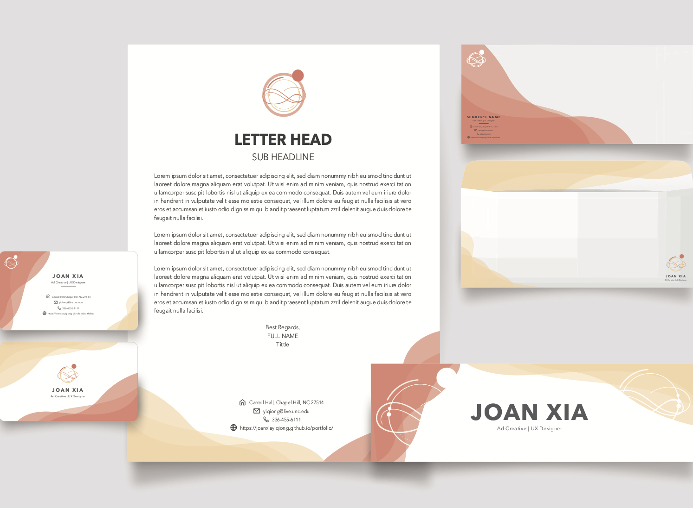

Identity
Graphic Design
I want to convey a sense of inclusiveness, patience, and consistency throughout the design and I produced three new logos following the same creative idea and strategy. I observed a planet-like shape in the initial mythology pattern and thought it could serve as a great metaphor for the desire to explore the world and the aspiration for opportunities. I was very inspired and determined to focus on this shape as the center of the logo design. Agreeing with some feedback, I removed the background in mythology to reduce the edgy feeling. I also added some simple round shapes to make the logo diverse and more like a planet orbit around the star. This logo design also took my career goal into consideration. I am currently pursuing an occupation as a UX designer in the ad creative field, so I believe a neat, modernized logo design will be a better fit for my profile. I
All of my stationery print and social media incorporated the final logo and repeated similar curved patterns. I also applied the same warm and analogous colorations to further deliver the feeling of consistency. Accordingly, the text and headlines in the letterhead, business card, and social media banners are center-aligned and all follow the same font. With regard to typography, I picked up a san serif font Avenir for both the titles and body text. The bolded Avenir looks more linear and dense compared to the light Avenir text and the thin patterns. Therefore, I employed the bold Aevnir for the logo and headlines to display a contrast between the main content and the light background images.
